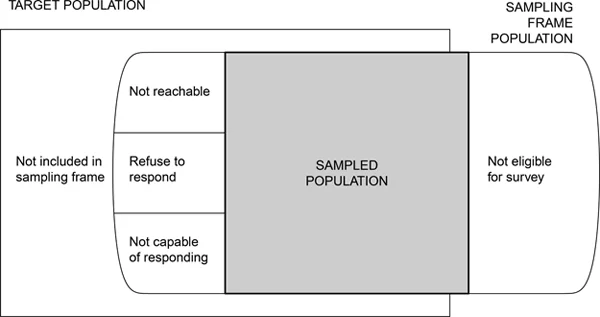
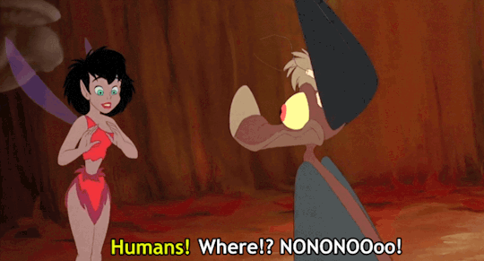

The Sampling Framework
Introduction
The objective of sample surveys is to make inference about a population from information contained in a sample selected from that population. We are usually interested in estimating some population parameter such as the population mean, proportion or total.
Populations and Representative Samples (1.2)
A sample is representative if it can be used to “reconstruct” what the population looks like and if we can provide an accurate assessment of how good that reconstruction is.
Some definitions are needed to make the notions of a “population” and a “representative sample” more precise.
- Observational Unit: The singular object that is being measured. A 🐈.
- Target Population: The complete collection of all observational units that we want to study. All 🐈 in Chico.
- Sample: A subset of the population. The 🐈 at Butte Humane Society
- Sampled population: The collection of all possible observational units that might have been chosen in a sample. Adoptable 🐈🐈 in Chico.
- Sampling unit: A observational unit that can be selected for study. A 🐈 available for adoption at BHS.
- Sampling frame: A list, map, or other specification that describes how sampling units from the sample may be selected. The roster of 🐈🐈 listed for adoption at BHS.
In an ideal survey, the sampled population will be identical to the target population. 🦄

- Target population: All individuals who have read a particular book
- Sampling Frame: The list of individuals who wrote a review for that book
- Sampling Unit: All individuals who bought, read, and reviewed the book
- Observation Unit: An individual who bought, read, and reviewed the book
- Sources of selection bias: Only individuals who feel very strongly (positively or negatively) about a book will post a review.
Selection Bias (1.3)
Selection bias occurs when the target population does not coincide with the sampled population because some population units are sampled at a different rate than intended by the investigator.
❓ If a survey designed to study household income has fewer poor households than would be obtained in a representative sample, would the survey estimates of the average or median household income be too high? or to low?
Too high.
Bias everywhere!
Can Bias ever be good? Yes!
By Oct ’19, over 1,600 cases of lung injuries and 34 deaths were found to be associated with vaping, but the actual cause of injuries were not known. In 2019 a group of researchers (see text for citation) conducted a study that ultimately led to the recommendation that the public stop using these products until more research on the causal association could be conducted.
This impact survey had the following types of selection bias:
- Researchers attempted to interview 83 patients who were reported to have lung injuries but only 53 responded (non-response bias).
- The sampling frame of 83 only came from physician-reported cases, which means there may be bias if the physicians only reported the more serious cases (undercoverage)
- THC is illegal in that state, so patients may have under-reported their use (undercoverage)
- Individuals who vape, incurred a lung injury but didn’t seek care were excluded from the study (undercoverage)
Just because your sample may likely contain bias, being up front about it in your reporting (this is what the limitations section is all about) is a very important aspect of open science.
Measurement Error (1.4)
- Measurement error: When the response differs from the true value
- Measurement bias: When the error tends to only occur in one direction
Often in ecological surveys, areas are divided into plots or grids of smaller size. A sample of plots/grids are selected and the number of plants in those selected grids are counted.
Field researchers have to make a decision about whether or not to count plants directly on the border. If one researcher always counts plants on the boarder as being inside the grid, and another one does not, their estimate will always be higher than the other person.
Surveying people
Obtaining accurate responses is challenging in all types of surveys. Especially when dealing with humans.

- People lie, forget, don’t understand the question.
- They are afraid of incriminating themselves (citizenship, underage alcohol or illicit drug use)
- They respond differently depending on the mode of survey (in person, phone, text, online)
- They respond in a “socially desirable” way that portrays them in a positive manner to the interviewer
- They respond in the way they thing the interviewer wants to hear.
- Not paying attention to the question - especially in a long list of “do you agree or disagree…”
- confusing question wording
Clear sampling protocols and thoughtful & validated survey design can minimize measurement error.
Sampling and Nonsampling errors (1.6)
- Most surveys report a “margin of error”, often something like “3 percentage points”
- The margin of error describes the sampling error - that is the error that occurs from taking one random sample instead of measuring the entire population.
- Nonsampling errors cannot be attributed to the sampling variability, but due to selection bias and measurement error.
The Design of the Sample Survey
Since the objective of sampling is to estimate the population parameters, such as the mean or the total of a population from information contained in the sample. The experimenter controls the quantity of information by choosing an appropriate sample size. How do we determine which sampling procedure to use and how many sampling units to sample?
It depends on the magnitude of the error that we find acceptable.
Suppose that we are trying to estimate some parameter \(\theta\) from our sample. \(\hat{\theta}\) is what we will call the statistic that is used to estimate \(\theta\). Thus, we will use \(\hat{\theta}\) as an estimate of \(\theta\). Therefore, we will want the value of \(\theta-\hat{\theta}\) to be small.
We call the value of \(\theta-\hat{\theta}\) the error because it is the difference between the estimated value and the true value.
We might want to specify that the absolute value of the error is less than some number, say \(B\). Thus,
\[ \mbox{Error of Estimation}=|\theta-\hat{\theta}|<B \]
We should also state a probability (\(1-\alpha\)) that our error is less than \(B\) if we were to take repeated samples. This is stated as
\[ P(\mbox{Error of Estimation}=|\theta-\hat{\theta}| < B) = 1-\alpha \]
We will often select \(B\) to be approximately 2 times the standard deviation of \(\hat{\theta}\), \(B=2\hat{\sigma}_{\hat{\theta}}\). Many of the statistics that we will discuss exhibit a normal sampling distribution even when the population distribution is skewed.
Types of sampling methods
We will go into the different types of sampling methods throughout the class, but here are a few.
Probability Sampling
The classical formulation of a statistical estimation problem requires that randomness be brought into the sampling plan. With proper randomness in the sampling scheme we can be sure that we have an unbiased estimate and that our statements that involve our confidence in the estimate are accurate. Sampling designs based on planned randomness are called probability samples.
Simple random sample
There are two types of simple random sampling. One is simple random sampling with replacement, whereby a member of the population can be selected more than once; the other is simple random sampling without replacement,whereby a member of the population can be selected at most once.
Unless otherwise specified, we assume that sampling is done without replacement.
Stratified sampling
Often deployed when we want to guarantee representation from different groups (strata) in the population. In stratified sampling the population is first divided into subpopulations, called strata, and then sampling is done from each stratum. Ideally the members of the subpopulations should be homogeneous relative to the characteristic under consideration.
For instance, suppose that a city planner is interested in finding out how his town would feel about a new public pool being built funded by tax payer dollars. He might divide the population up into different income groups such as high, middle, and low incomes. He would then take a simple random sample of individuals within each strata (income group). This would guarantee that his sample had representation from all income groups.
Note that this type of sampling plan makes use of an auxiliary variable, in this case income. By stratifying we should be increasing the accuracy of our estimate.
Questionnaire Design / Data collection tools
We will return to this topic of how to design appropriate and useful data collections in a few weeks.